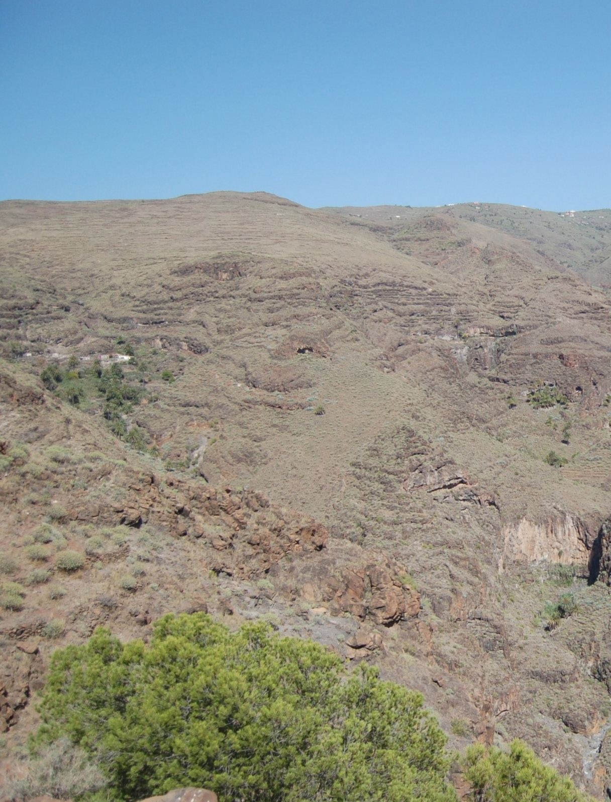

Land of Terraces: From the Landscape of Necessity to the Need of the Landscape
The Journal of Terraced Landscapes volume 2, issue 1, pp. 122–139 (2026) · Cite this article
- 75 views
- 37 downloads
- DOI10.5281/zenodo.18269854

Abstract
The construction of these extraordinary territorial structures, whose main purpose was the cultivation of the land and the production of food, involved both prodigious physical work and a remarkable task of design and construction exactly embedded in the slopes of the mountains. The passage of time, which acts like a gigantic eraser, and the loss of the original reason that led to them cause these terraced landscapes to fade. If it was human need – essentially related to food production – that created them, we should look for new reasons, new functions and new formulas to reactivate and conserve them. Beyond the obvious aesthetic and landscape perspective (emotion), terraced landscapes and agroecosystems and other historical productive structures generated by peasant communities can play a decisive role as both a productive and heritage resource, both at the service of a new peasant economy and at the service of the conservation of complex heritage facts.
Keywords
- Evolution of rural-urban relationship
- Terraced landscapes
- La Gomera
- Peasant territorial management
- Radical reform
1. Introduction
The terraced landscapes were described by the Canarian geographer Leoncio Afonso as the “landscapes of hunger”. The construction of these extraordinary territorial structures, whose main purpose was the cultivation of the land and the production of food, involved both prodigious physical work and a remarkable task of design and construction exactly embedded in the slopes of the mountains.
Behind the terraces are assembled human need and peasant culture. The current perception that the tourist as an outsider has of these cultural landscapes tends to put aesthetic perception as the main stimulus, the emotion produced by the beauty of the agrarian landscape built by humans, rather than the reflection of the historical and anthropological reasons that created them. The current emotional relationship that tourists have with historic peasant landscapes contrasts with the physiological relationship that their builders had with the territory. The passage of time, which acts like a gigantic eraser, and the loss of the original reason that led to them cause these terraced landscapes to fade. If it was human need – essentially related to food production – that created them, we should look for new reasons, new functions and new formulas to reactivate and conserve them, because the enjoyment of the landscape is also a human need. Seeking ways to satisfy human needs together — those of the body and soul, those of the individual and those of the community, those of culture and nature, those of integral development and heritage conservation — with those of the physiology of the territory is what moves us to recreate and make viable a new way of thinking in favour of terraced landscapes and, by extension, to the intelligent, functional, resilient and stable landscapes of nature and peasant culture.
2. the Historical Relations Between the Countryside and the City
By looking at functional evolution, and combining the ideas of Lewis Mumford (2005, 2012) and Henri Lefebvre (1972), it is possible to establish a schematic sequence of the different phases through which the city passed, as well as its crises from the origin to the present.
From the functional point of view, the city was assuming and developing different tasks, starting with the original, the religious and that of a meeting place for the cohort of villages that populated the territory; which was succeeded by the political function, to normalize and order the joint action of the different groups and human communities in the territory beyond the limits of the village; the commercial facilitated in the Mediterranean Sea by the boom and development of navigation and finally the Industrial and its current sequel the megalopolis.
In any case, the city did not evolve by discarding the previous functions but by incorporating them, assuming them, adapting them if anything to the time, but without renouncing them. The city today preserves the features of this historical evolution and thus the religious centre, the governmental authority, the commercial space or the manufacturing activity and the workshops are present in the contemporary urban structure as essential parts of it, as the vestiges of its evolution, almost in the same way that our brain preserves the reptile brain or geology the record of tectonic and geomorphological events that shape it to the territory. The village, however, maintained during the long period of time from its origin, with the advent of the Neolithic Revolution until the consolidation of industrial agriculture in the twentieth century, a single function: the management of the surrounding nature to produce food extensively, essentially using local inputs and combining agricultural techniques in a systemic and systematized strategy livestock and forestry. The end of this essential function in the management of the territory is the main cause of the abandonment of the countryside and the contemporary depopulation that is behind, or in front of, one of the determining factors of the great rural fires. The outline of this functional evolution of the city is represented in the following diagram (Figure 1).
As can be seen, in the history of relations between the city and the countryside we find three critical moments: 1. The birth and origin of the city by rural implosion. For Lewis Mumford, the city
is formed from an “implosion” of energies of a rural nature caused by “multiple diverse elements of the community scattered throughout a large system of valleys that were mobilized” for its foundation (2012: 61). Strictly speaking, the first germ of the city is the village, and it is the meeting of several villages that gave rise to the city. We could say that the city was born and learned from the village and that in its DNA there are vestiges of that first vital impulse. As much as history, and the different subsequent versions of the city, were moving away from that village origin, in Lewis Mumford’s opinion “without that long period of agricultural and domestic development, the surplus of food and labour that made urban life possible would not have been achieved. And without the foresight and conscious moral discipline that Neolithic culture introduced in all spheres, it is doubtful that the more complex social cooperation that developed in the city would have appeared” (2012: 25).
2. The rural/urban inflection. After the Neolithic Revolution, the next great revolution
of humanity was the industrial revolution that gave rise to a new type of city and, above all, to a radical change in its relations with the countryside. The countryside will become the large-scale supplier of labour to the city, and this will lead to a gradual depopulation of large rural areas – which in the case of Spain began in the first decades of the TWENTIETH century – and an increase in the concentration of production, both in agriculture and in the media. which will pass into the hands of agrarian industrial capital – agribusiness and agribusiness – to the detriment of small producers. The industrialization of the countryside will also lead to the extinction of the peasant, his communities, his culture, his value system and his agroecosystems. And in this context also of the terraced landscape, as demanding in labour as in time and hardness of work.
3. The urban explosion. After centuries of urban accumulation, and the recent
annulment of the peasant economy, the city has ended up exploding, generating hyper-technological urban environments and, in relation to the culture of the land, a-cultural, to the point that “we live, in fact, in a universe immersed in an explosion of mechanical and electronic inventions, the parts of which move away, increasingly, of its human centre” and of the territory, causing the technological explosion “to produce a similar explosion of the city itself: the city has exploded, scattering its complex organs and organizations throughout the entire landscape” (Mumford, 2012: 61). The birth of megalopolises and the growth of cities have not yet stopped and, at the same time, there is a phenomenon of diffusion, invasion and distortion that floods the countryside with structures, laws, thoughts and urban fashions that are superimposed – to the point of sometimes erasing them – on the vestiges of the preexisting “rustic civilization” to which Miguel de Unamuno referred. Henri Lefebvre expressed it in a synthetic and forceful way: “the city asserts itself, then it explodes” (1972: 114). And today, the tourists who visit rural landscapes are also, for the most part, representatives of that urban explosion and of an increasingly decontextualized vision and perception of the historical facts that confer the identity of the places they visit, thus contributing to their trivialization, gentrification and forgetfulness.
In short, the Industrial Revolution and its aftermath broke with the historical relations between the countryside and the city, between urban culture and peasant culture, which for millennia, from the first Neolithic to the generalization by maturation of the Industrial Revolution (mid-twentieth century), was established on the following scheme (Figure 2):
Rest of the World
Around each city a group of villages, or scattered hamlets, was responsible for the main food supply of the city. The market, or food market, occupied a central space in the city, generally close to religious representation – church or cathedral – and local or regional political power.
Around the food market were established the shops linked to non-local food: the grocery and colonial shops in charge of supplying food from abroad, from the distant overseas colonies to the relatively nearby production centres of the rest of the region or other regions. This model of agri-food production and consumption that linked the countryside –mainly peri-urban and secondarily regional – with the city was gradually extinguished with the generalization of company commissaries and, subsequently, supermarkets linked to multinational food companies, so that in the seventies of the last century this model was practically liquidated and was replaced by the current agro-industrial model of production and consumption. based on shopping malls, supermarkets and, increasingly, outsourcing in food preparation.
3. Current Rural-Urban Relations
The current relations between the countryside and the city are based on two circumstances: first, the absolute ignorance that urban society has of the countryside and agriculture and the hegemony of urban thinking over any other type of thinking; second, the absolute domination of intensive agriculture and food distribution linked to large commercial areas controlled by multinational companies.
The following diagram (Figure 3) represents the characteristics of the current model of relationship between the countryside and the city in relation to food supply: Unlike the previous model, the peri-urban and regional countryside no longer directly supplies the city. The villages and hamlets of the rural area near the city have ceased to have that function. The old peasant agriculture is transformed and replaced by agricultural holdings specialized in monocultures that supply the agricultural industry and whose products can arrive – or can come – through food distribution and trade, anywhere.
The second characteristic of the current model is that the countryside is divided in two: the one most conducive to agrarian industrialization intensifies and specializes in monocultures and the one that could not be intensified, the rural territories and villages furthest from the city located in territorial areas with special physical, orographic or bioclimatic difficulties, was gradually abandoned and depopulated.
Public policies on the rural environment were also divided into two: on the one hand, agricultural policies, designed to increase agricultural production through equipment, infrastructures and aid for mechanization and investment, directed their efforts towards intensified territories; and, on the other, the conservationist policies that, from the eighties of the last century, directed their efforts towards peasant territories that had gone into decline with the objective of “nature conservation”.
However, the conservation policy made four structural errors: a first error of nomenclature – they used the concept of “natural space” instead of the one that would have been more appropriate: territories of nature and peasant culture that had gone into decline – a second error of methodology — they began to talk about protection, most of the time paralyzing, instead of reactivation/functional updating of the local peasant culture so that it would manage the territory again; a third error of strategy – they based the conservationist intention on biological succession instead of on biological renewal, typical of the interaction culture – community – nature developed and refined over centuries by peasants; and a fourth error of perspective: the territory and ecosystems that they wanted to conserve – in reality agroecosystems – were the historical result of the peasant economy and without a new version of the relevant local economy – inspired rather than replicated –in the agroecological peasant economy, it would not be possible to conserve the landscapes, agroecosystems and topo-biodiversity and these, in the absence of management, would enter – in fact they have already entered – into ecological drift, causing the advance of the forest on the old fields of cultivation and pastures increased the forest area of scrub and woodland and with it the risk of large fires.
From the urban point of view, another change will take place: the city will lose the historical function of exchange with the countryside, the relationship between agricultural producers and urban consumers, which occurred in the market or food market in favour of the location of shopping centres and large stores on the outskirts of cities and connected to the ring roads. Local food consumption would be replaced by globalised industrial food.
4. the Future Relations Between the Countryside and the City
In an approach to the agriculture of the future, with the aim of restoring the lost relationship and adapting it to the contemporary, we can identify three rural areas – the peri-urban, the intensified agrarian and the peasant – with three functions and, therefore, three different territorial and agrarian policies.
In peri-urban rural areas, it would be a matter of promoting local agriculture through an urban agriculture strategy and planning, as is being addressed in many cities, especially in small and medium-sized cities that have not built extensions or infrastructures – or at least only partially – on the rich agricultural soils of meadows and farmland of the urban periphery.
In the intensified rural sector, it would be a matter of reducing its environmental impact by countering an eco-intensification that reduces and alleviates the negative effects of industrial production in monocultures and economies of scale.
Finally, in rural areas of a peasant nature, to which terraced landscapes belong, it would be a matter of reactivating a function linked both to agricultural and forestry production with high added value and to landscape management and planning within a new economic logic inspired by the agro-ecosystem principles developed by peasant ancestors but logically with the necessary updates of contemporary society. The following diagram (Figure 4) represents this trilogy of rural territories and their new relationships with the city:
5. Two Peasant Models of Agroecological Management on the Island of La Gomera
The observation, recognition – in the double sense of knowing and giving value – and updating the agroecological systems of peasant ancestors must be completed with the search for an update of their economic viability, which requires taking advantage of their unique ecological potential to improve a differential economic value in the market and, at the same time, seeking mechanisms to remunerate the provision of ecosystem services and from which the rest of the population benefits. society. Without an up-to-date and rewarding economic activity, the conservation of the natural/cultural heritage of the territories managed by peasant ancestors will be in question.
On the island of La Gomera (Canary Islands, Spain) we find two good examples that serve to explain, in terms of possible economic/ecological profitability, the idea of functional reactivation of the territories of nature and peasant culture: the use of guarapo in Cubaba and the oasis agriculture of Gueleica.
Cubaba’s agroecosystem
Dehesa systems are one of the best examples of the success of peasant cultures in the complex and concerted management of the environment by promoting a balanced synthesis between multiple livestock and forest use and the conservation and enrichment of the productive potential of the ecosystem, thus ensuring its permanent conservation.
Although the best known are the holm oak (quercus ilex) pastureland systems of the southwestern quadrant of the Iberian Peninsula, there are numerous local models that combine the arrangement of trees in “hollow forest” with livestock or agricultural uses: the guarapo palm groves in La Gomera, the orchards in Asturias, the chestnut groves of the northwest of the peninsula, the pollarded beech forests in the Basque Country, etc., are also pastureland systems.
A Canarian peasant (magician) perched on the top of a palm tree in Cubaba (La Gomera) performs the “curing” operations for the extraction of guarapo – the sap of the tree – with which what is popularly known as palm honey is made. The guarapeo of the Canary Island palm tree (Phoenix canariensis) and the integral use of the palm groves, the fruits to feed the animals and the stalks or branches for the construction or the manufacture of tools, constitute a unique and complex peasant culture of the midlands of the island. (Photo J. Izquierdo).
In the management of the agroecosystem of Cubaba, the interstices between the palm trees are not used for livestock but for agriculture through a system of terraces, as can be seen in the photograph. Small livestock, mostly goats, use and graze the surrounding forest and are the main suppliers, along with pigs and chickens, of animal protein for the community’s consumption. Palm honey extracted from guarapeo was the main commercial resource of this production system.
The agroecosystem of Gueleica
Some forms of agriculture, such as the example of family farming in oases in Gueleica, in the lower midlands of the island of La Gomera, led to the creation of a rich ecozone and a notable increase in biodiversity in areas of extreme aridity. This small nucleus of traditionally managed hamlets – which we would now call sustainable, agroecological, multifunctional and with integrated and cyclical production between inputs and products – was organized around a minimal upwelling of water with which they worked, by means of terraces, an orchard with fruit trees, a cereal crop, a pasture of guarapera palm trees and a herd of goats. The peasant management of Gueleica, now abandoned, was vital for the conservation of wildlife, topo-biodiversity and some endangered species. Gueleica. In the semicircle, the place occupied by the upwelling of water that allows the practice of oasis agriculture and organizes the agroecosystem of integral use, agricultural and livestock, from which the local birdlife and other wild species also benefit. (Photo J. Izquierdo).
6. Final Note
Probably the idea that the canonical peasant management of the territory, exemplified in this article in the cases of Gueleica and Cubaba, and in many other places in the Canary Islands that still preserve the structures, models and vernacular systems of peasant management of high heritage value, is probably the best and most pertinent strategy for the joint conservation of both wild fauna and flora and agricultural and livestock biodiversity as well as culture local island.
The current nature conservation policy has disregarded the complex vision provided by the local agroecological history and the integral perspective of the territory and has become sectorialised, verticalized and specialized, ignoring the historical, economic and cultural circumstances, or rather agro-cultural circumstances, which explain the presence of this or that species and the integral conformation of the landscape.
It is a static and markedly bureaucratic policy with scientific support, most of the time, defined, framed and limited by the reductionist and vertical perspective of the specialist in this or that species and, therefore, lacking the necessary systemic vision that would allow the conservation of the complex ecological contexts without which the conservation of this or that species is not possible. Either the system and its essential agroecological processes are preserved or the parts that compose it are extinguished.
Beyond the obvious aesthetic and landscape perspective (emotion), terraced landscapes and agroecosystems and other historical productive structures generated by peasant communities can play a decisive role as both a productive and heritage resource, both at the service of a new peasant economy and at the service of the conservation of complex heritage facts.
The territorial planning promoted by peasant communities throughout history, through an adjusted and institutionalized use of agricultural, livestock and forestry techniques, has reached the present day in those places barely influenced by industrialization. These peasant geographies, these ancient European cultural landscapes that have survived industrial intensification, constitute valuable agroecosystems in danger of extinction in the twenty-first century. Conserving the peasant nature of the territory requires the design of innovative policies that prevent its disappearance due to drift, neglect or abandonment.
The policies of nature conservation and the promotion of agricultural activity urgently require a radical reform, a Copernican turn: it is no longer a question of presenting to society the achievements of the government of the day that has declared half a dozen new protected areas or continuing to try to increase agricultural income in an undifferentiated way by area or number of head of livestock, but to remunerate, as far as this is concerned, the provision of agroecosystem services of high heritage value.
It is a matter of turning our eyes, in the case of the most unique and exemplary agroecosystems, to peasant management or, rather, to a contemporary version of intelligent historical peasant management, preserving its substance and updating its forms. Preserving the what and changing the how. In short, and in addition, it is a matter of seeking solutions to the main problem of nature conservation in Spain: the abandonment of strategic territories of peasant nature and the general drift of agroecosystems.
References
- Izquierdo Vallina, J. (2008). Asturias, región agropolitana: Las relaciones campo-ciudad en la sociedad posindustrial. KRK Ediciones.
- Izquierdo Vallina, J. (2012). La casa de mi padre: Manual para la reinserción de los territorios campesinos en la sociedad contemporánea. KRK Ediciones.
- Izquierdo Vallina, J. (2013). La conservación cultural de la naturaleza. KRK Ediciones.
- Izquierdo Vallina, J. (2016). Los pastores queseros de los Picos de Europa: Entre la burocracia conservacionista y la cultura del territorio. In A. Martínez Vega (Ed.), Covadonga: Historia y arte, naturaleza y tradición. Real Instituto de Estudios Asturianos (RIDEA).
- Izquierdo Vallina, J. (2019). La ciudad agropolitana: La aldea cosmopolita. KRK Ediciones.
- Izquierdo Vallina, J. (2025). Una nueva economía para la aldea del siglo XXI. KRK Ediciones.
- Lefebvre, H. (1972). La revolución urbana. Alianza Editorial.
- Mumford, L. (2005). Historia natural de la urbanización. In J. M. Naredo & L. Gutiérrez (Eds.), La incidencia de la especie humana sobre la faz de la Tierra (1955–2005). Universidad de Granada; Fundación César Manrique.
- Mumford, L. (2012). La ciudad en la historia. Pepitas de Calabaza.
Rights and permissions
Open Access. This article is licensed under a Creative Commons CC BY 4.0 license, which permits use, sharing, adaptation, distribution and reproduction in any medium or format, as long as you give appropriate credit to the original author(s) and the source and indicate if changes were made.
About this article
Cite this article
Izquierdo, J. (2026). Land of Terraces: From the Landscape of Necessity to the Need of the Landscape. The Journal of Terraced Landscapes, 2(1), 122–139. https://doi.org/10.5281/zenodo.18269854
- Published
- January 2026
- Issue
- Volume 2, Number 1
- Journal
- The Journal of Terraced Landscapes, ISSN 2754-7612 (Online)
- Archive
- Zenodo record 18269854
- Evolution of rural-urban relationship
- Terraced landscapes
- La Gomera
- Peasant territorial management
- Radical reform